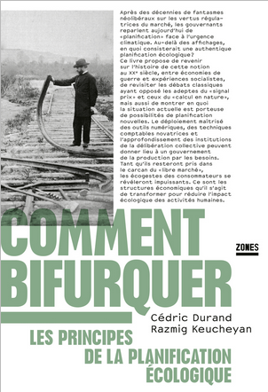
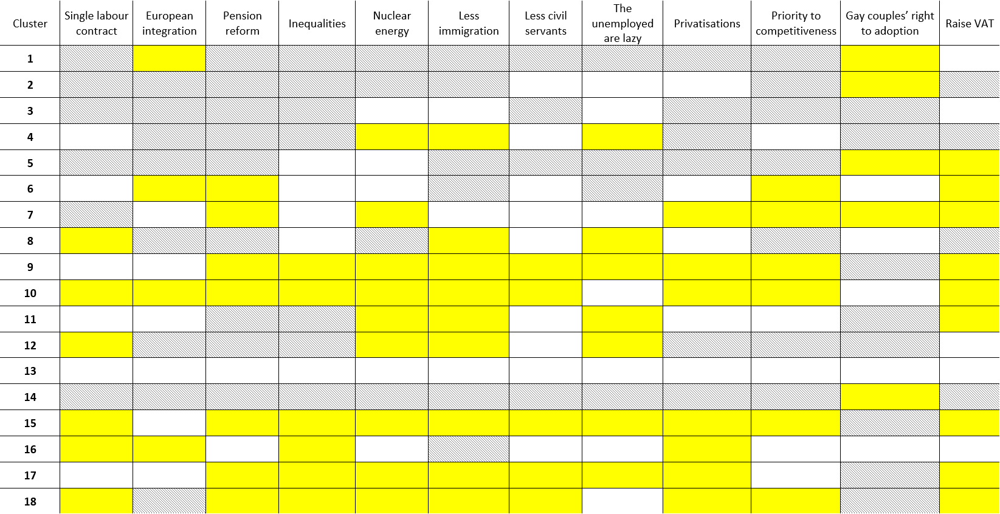
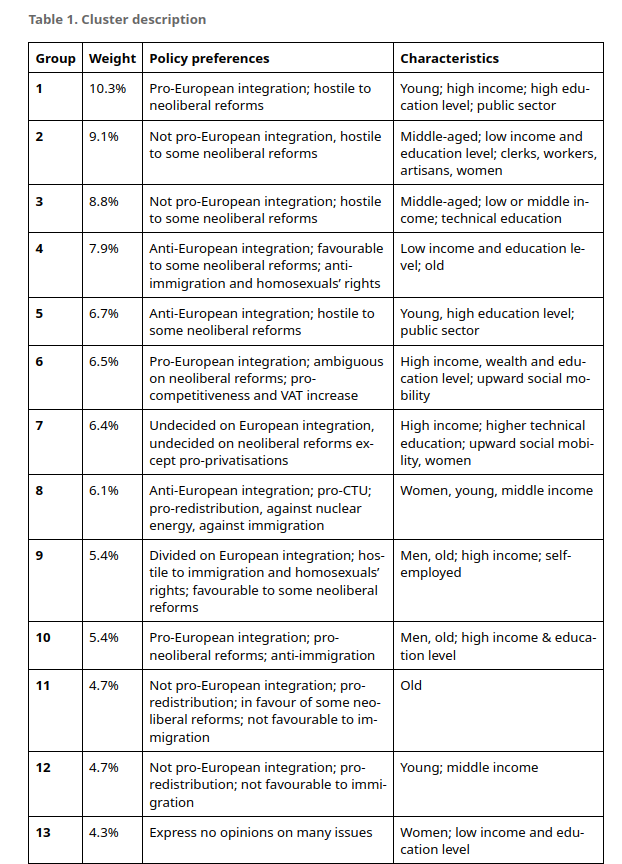

flowchart LR
%% Déclaration des nœuds
SPG["Socio-political groups"]
I1["Labour Market"]
I2["Product market"]
I3["Financial system"]
I4["Social protection"]
I5["Education system"]
I6["Broad economic policy orientation"]
SPG --> I1
SPG --> I2
SPG --> I3
SPG --> I4
SPG --> I5
SPG --> I6
For a Neorealist Political Ecology
An Institutional Ecological Change Approach to Analyze the Socio-political Conditions for the Ecological Bifurcation
Motivation
Multiplication of proposals for a social-ecological transformation and degrowth based on ecological planning
Mainly dedicated to find the good institutions and reforms to make the social-ecological transformation technically possible
But one major blind spot: the socio-political limits of those proposals
Finding the “good” institutions and policies is not enough, one needs to analyze institutional (ecological) change in a non-normative way
The fundamental question
“Obviously, many areas remain to be explored, including the crucial one of the specific political conditions that make such an aspiration [i.e. ecological planning] possible. (p. 247, author’s translation)

“The question would be the following: to what extent could a social-ecological bloc seize upon ecological planning to establish itself as a hegemonic political force ?” (p. 247, author’s translation).
In other words, could a political strategy based on social-ecological planning aggregate a dominant social bloc ?
Objective
Use the neorealist approach to institutional change (Amable and Palombarini 2005, 2008, 2024) to answer this question
An approach which has been proven useful to analyze institutional change from a political economy perspective
Institutional change conceived as the result of political, institutional and ideological conflict in a non-normative way
But how can “the environment” be integrated into this approach ?
But how can “the environment” be integrated into this approach ?
- Through the identification of socio-political groups
- Through the three dimensions of social conflict: institutions, political mediation and ideology
1. Identification of socio-political groups
SPG1
SPG2
SPG3
SPG4
SPG5
SPG6
Socio-political groups: groups of individuals sharing similar expectations regarding public policies and their prefered socio-economic model
1. Identification of socio-political groups
Political strategy 1
Marginal group
Well-integrated group
Core group
Political strategy 2
Social bloc: socio-political groups aggregated by a political strategy
Dominant social bloc: social bloc aggregated by the winning political strategy
Socio-political groups: what indicators ?
Indicators used to define the socio-political groups relate to the five institutional domains considered in Amable (2003), along with broad economic policies
Example: Amable (2021)


My argument
Further identifications of socio-political groups must take more indicators related to ecological issues
Problem: what ecological issues should be taken into account ?
Identification of socio-political groups
flowchart LR
%% Déclaration des nœuds
SPG["Socio-political groups"]
I1["Wage-labour nexus"]
I2["Forms of competition"]
I3["Monetary regime"]
I4["International integration"]
I5["Form of the state"]
I6["Social relation to the environment"]
SPG --> I1
SPG --> I2
SPG --> I3
SPG --> I4
SPG --> I5
SPG --> I6
Social relation to the environment as a sixth institutional form
The political aspects of how societies regulate their relation to the environment and how they manage constraints imposed by ecosystems (Cahen-Fourot 2023)
Indicators related to the environment should capture individuals’ expectations regarding their prefered social relation to the environment
2. The three dimensions of social conflict

Conclusion
An institutional ecological change approach (“neorealist political ecology”) can be build on the neorealist approach by:
Considering more indicators related to ecological issues in the identification of socio-political groups
Considering the relationships between the social relation to the environment and the three dimensions of social conflict (ideology, institutions, political mediation)
Further issues:
- Finding good survey data with the good questions can be hard
- Still puzzled by the definition of “the environment” and the “social relation to the environment”
References
Amable, Bruno. 2003. The Diversity of Modern Capitalism. Oxford ; New York: Oxford University Press.
———. 2021. “In Search of the Bloc Bourgeois.” Revue de La Régulation. Capitalisme, Institutions, Pouvoirs, no. 31 (August). https://doi.org/10.4000/regulation.20350.
Amable, Bruno, and Stefano Palombarini. 2005. L’économie Politique n’est Pas Une Science Morale. Raisons d’Agir. Paris.
———. 2008. “A Neorealist Approach to Institutional Change and the Diversity of Capitalism.” Socio-Economic Review 7 (1): 123–43. https://doi.org/10.1093/ser/mwn018.
———. 2024. Blocs Sociaux Et Domination: Pour Une Économie Politique Néoréaliste. 1er édition. Paris: Liber/Raisons d’agir.
Cahen-Fourot, Louison. 2023. “Chapitre 9. Économie et écologie : le rapport social à l’environnement.” In Théorie de la régulation, 87–95. Dunod. https://doi.org/10.3917/dunod.boyer.2023.01.0087.